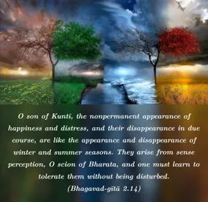
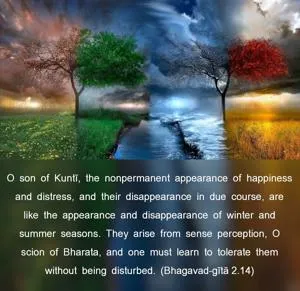
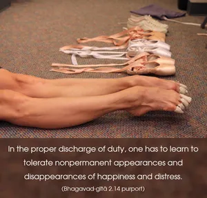
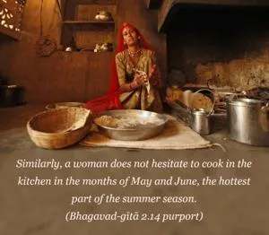

O son of Kuntī, the nonpermanent appearance of happiness and distress, and their disappearance in due course, are like the appearance and disappearance of winter and summer seasons. They arise from sense perception, O scion of Bharata, and one must learn to tolerate them without being disturbed.




In the proper discharge of duty, one has to learn to tolerate nonpermanent appearances and disappearances of happiness and distress. According to Vedic injunction, one has to take his bath early in the morning even during the month of Māgha (January-February). It is very cold at that time, but in spite of that a man who abides by the religious principles does not hesitate to take his bath. Similarly, a woman does not hesitate to cook in the kitchen in the months of May and June, the hottest part of the summer season. One has to execute his duty in spite of climatic inconveniences. Similarly, to fight is the religious principle of the kṣatriyas, and although one has to fight with some friend or relative, one should not deviate from his prescribed duty. One has to follow the prescribed rules and regulations of religious principles in order to rise up to the platform of knowledge, because by knowledge and devotion only can one liberate himself from the clutches of māyā (illusion).
The two different names of address given to Arjuna are also significant. To address him as Kaunteya signifies his great blood relations from his mother’s side; and to address him as Bhārata signifies his greatness from his father’s side. From both sides he is supposed to have a great heritage. A great heritage brings responsibility in the matter of proper discharge of duties; therefore, he cannot avoid fighting.